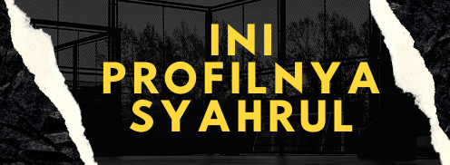

Syahrul Yuda Prasetya
Halo, nama saya Syahrul Yuda Prasetya. Saya adalah mahasiswa jurusan Teknik Informatika di Universitas Dian Nuswantoro. Saya selalu tertarik dengan teknologi informasi dan selalu berusaha untuk terus memperluas pengetahuan dan keterampilan saya di bidang
ini.Saat ini, saya sedang mengikuti kegiatan MSIB Batch 4 yang diadakan oleh Kementerian Pendidikan, Kebudayaan, Riset, dan Teknologi . Kegiatan ini adalah salah satu kesempatan berharga bagi saya untuk mempelajari hal-hal baru tentang
teknologi informasi, seperti pengembangan web, data science, dan keamanan sistem. Selain itu, saya juga bisa bertemu dengan banyak orang hebat dan memperluas jaringan pertemanan. Selain kegiatan di kampus, saya juga aktif mengikuti berbagai
kegiatan di luar kampus. Saya percaya bahwa dengan terus belajar dan berpartisipasi dalam berbagai kegiatan, saya akan dapat memperoleh pengalaman yang berharga dan membangun keterampilan yang diperlukan untuk membangun karir di bidang
teknologi informasi.